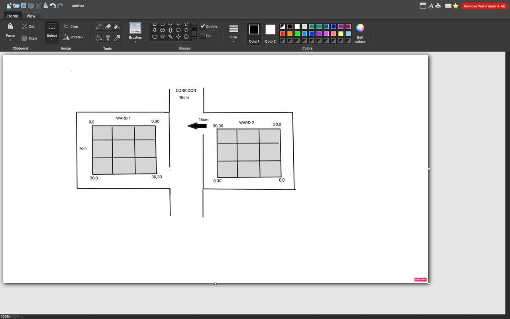
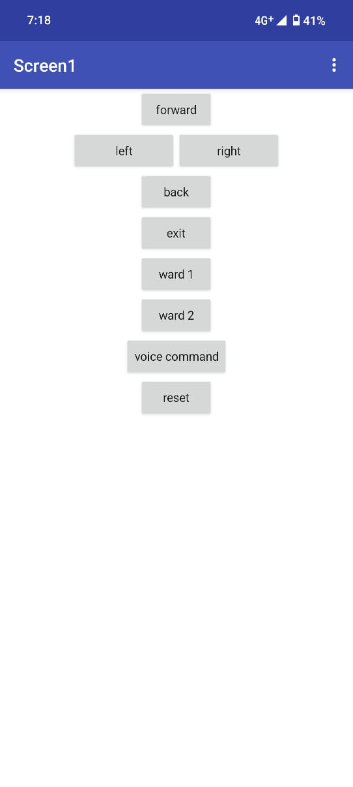

View & Paste Code
Introduction
Welcome to the future of mobility! Our Smart Automated Wheelchair is not just a device—it’s a breakthrough in assistive technology designed to empower users with seamless, safe, and intuitive navigation.
- 👩💻 Mobile App: Built on MIT App Inventor, offering a sleek dashboard to issue commands, track battery, view live position, and execute an instant emergency stop with a single tap.
- 🗣️ Voice Commands: Cutting-edge Web Speech API integration allows natural-language control—simply speak “forward,” “left,” or “ward mode,” and the wheelchair obeys without any physical input.
- ⚙️ Ward 1 & Ward 2 Modes: Tailored operational profiles activated by voice—"ward one" or "ward two"—each mapping to precomputed coordinate waypoints.
• Ward 1: Engages basic mode. Loads waypoint array for sequential grid navigation with obstacle polling and auto-braking at ≤10cm.
• Ward 2: Activates precision mode. Uses advanced odometry and angle computation θ = atan2(Δy, Δx) with live Firebase logging for diagnostics. - 🔋 Smart Monitoring: Instant alerts on low battery, connectivity drops, or sensor faults via push notifications.
- 🌐 Cloud Sync: Firebase Realtime Database ensures sub-200ms round-trip latency for commands and telemetry.
Media

Buckle up—this is mobility reimagined!
Abstract
- Hands-free indoor navigation via voice commands.
- Real-time cloud communication using Firebase.
- Precision obstacle detection for user safety.
- Accurate positioning on a virtual grid.
Technologies Used
- ESP32 (Wi-Fi & Bluetooth MCU)
- Arduino & AccelStepper library
- Firebase Realtime Database
- HC-SR04 Ultrasonic Sensor
- MIT App Inventor & Web Speech API
Movement Logic
- 30×30 grid mapping (1 unit = 10cm).
- Microstepping at 1/16 for smooth motion via ULN2003.
- Odometry: xnew = x + d·cosθ, ynew = y + d·sinθ.
- Angular update: θnew = θ + Δsteps·stepAngle (mod 2π).
- Boundary enforcement prevents out-of-bounds moves.
- Non-blocking
millis()loops ensure sensor polling.

Obstacle Avoidance
- Trigger: 10µs pulse; echo via
pulseIn()for µs precision. - Distance calculation: (duration / 2) / 29.1 cm.
- 100ms sampling with 5-sample sliding average filter.
- Immediate stop when distance ≤10cm;
isObstacle=true. - JSON event sent to Firebase
/eventsnode. - Auto-resume after stable clearance readings.
Mobile Interface
- MIT App Inventor WebDB component syncing with Firebase.
- UI buttons for navigation & emergency stop.
- SpeechRecognition API in WebView writes to
/commands/voice. ValueEventListenerupdates UI on/statuschanges.OnDisconnectedevents handle network drops with backoff.- Firebase rules enforce authenticated writes only. 
Future Scope
- 360° LiDAR/ToF sensing for comprehensive obstacle mapping.
- SLAM integration for dynamic mapping & localization.
- Predictive ML path planning.
- Conversational NLP commands.
- Modular add-ons: health monitoring, fall detection, AR guidance.
Conclusion
- Voice-driven control validated in trials.
- Obstacle detection within 10cm accuracy.
- Drift <5cm over extended runs.
- Cloud sync latency <200ms round-trip.
- Scalable platform for advanced autonomy.
Code
Note: Click the pink link below to open the full source code on a separate page.
View Source Code